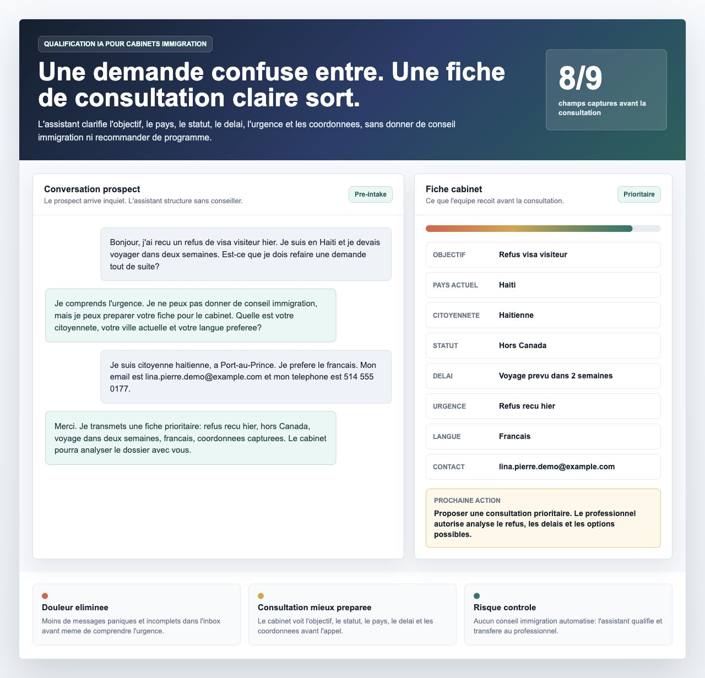

Assistant de préconsultation
Un parcours bilingue qui accueille une demande, pose des questions de qualification, applique des limites explicites et produit une fiche exploitable par l'organisation.
- Questions et scénarios configurables
- Garde-fous et transfert vers un professionnel
- Architecture pensée pour isoler les données de chaque organisation